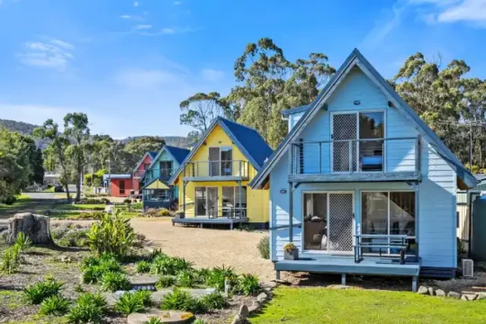
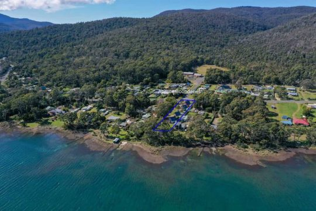
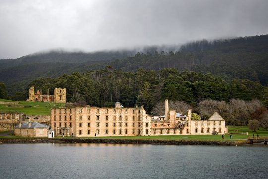
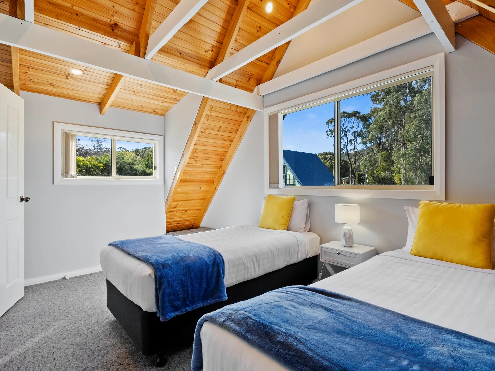
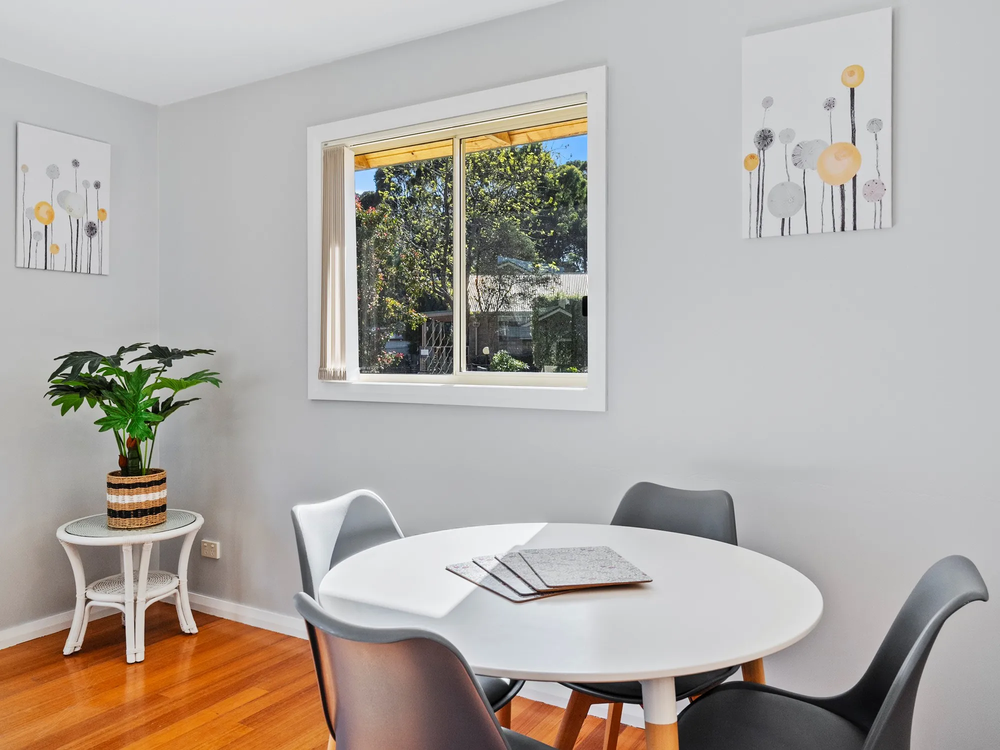
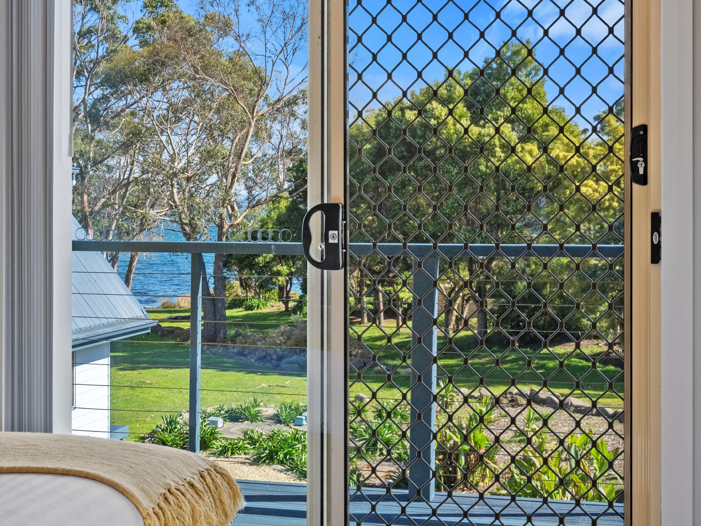
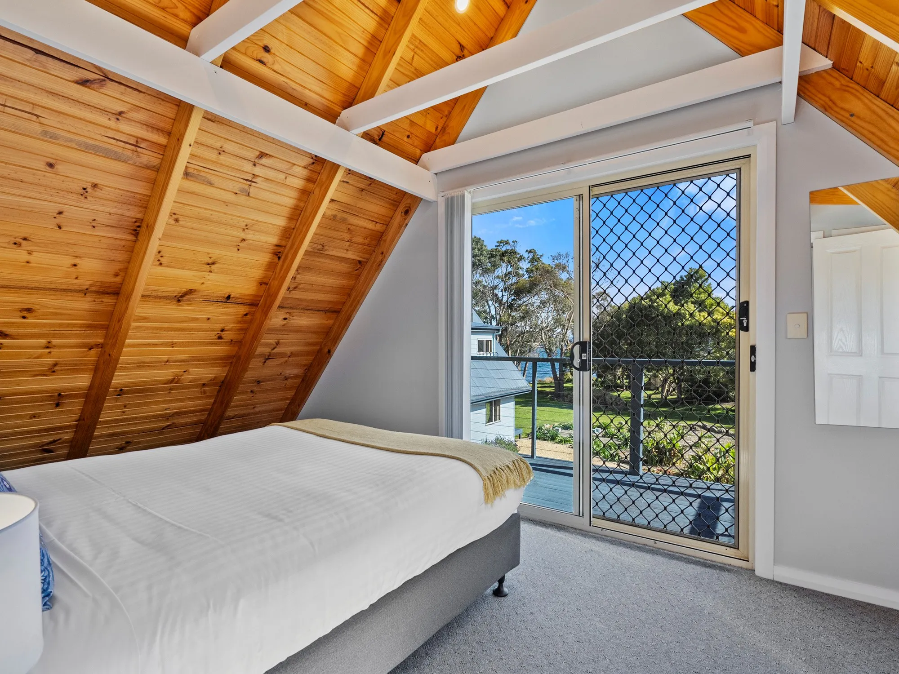
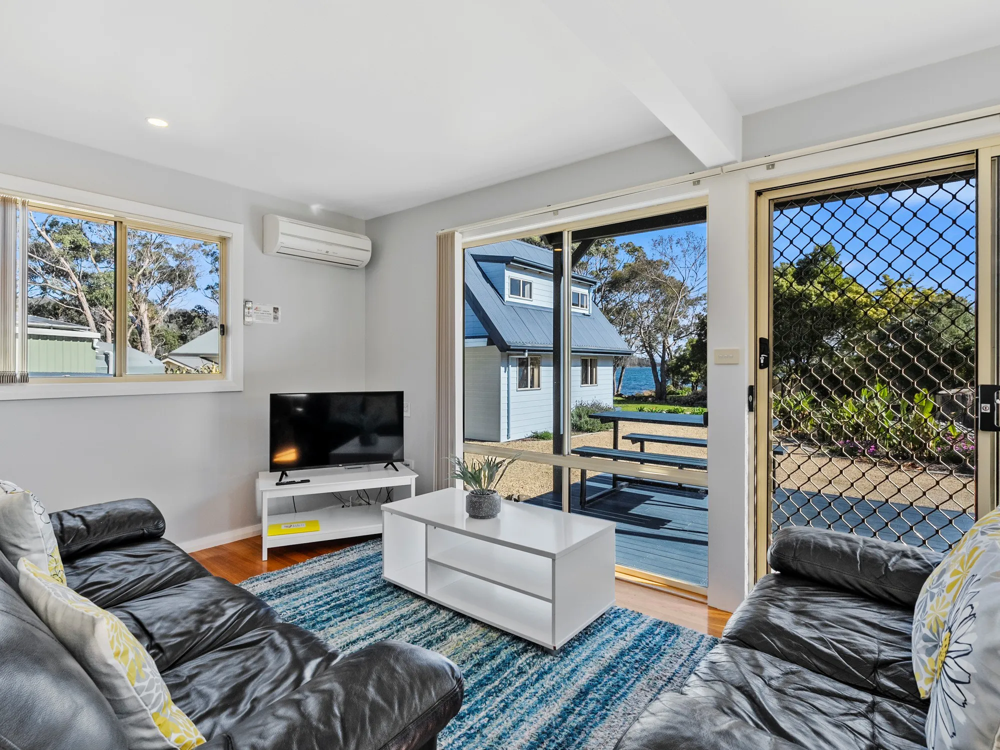
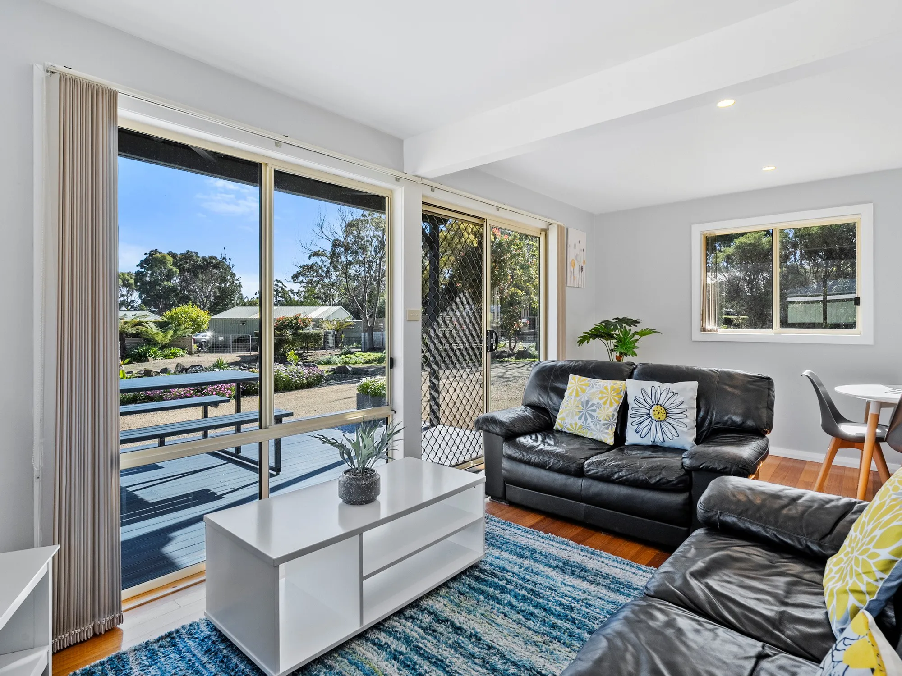
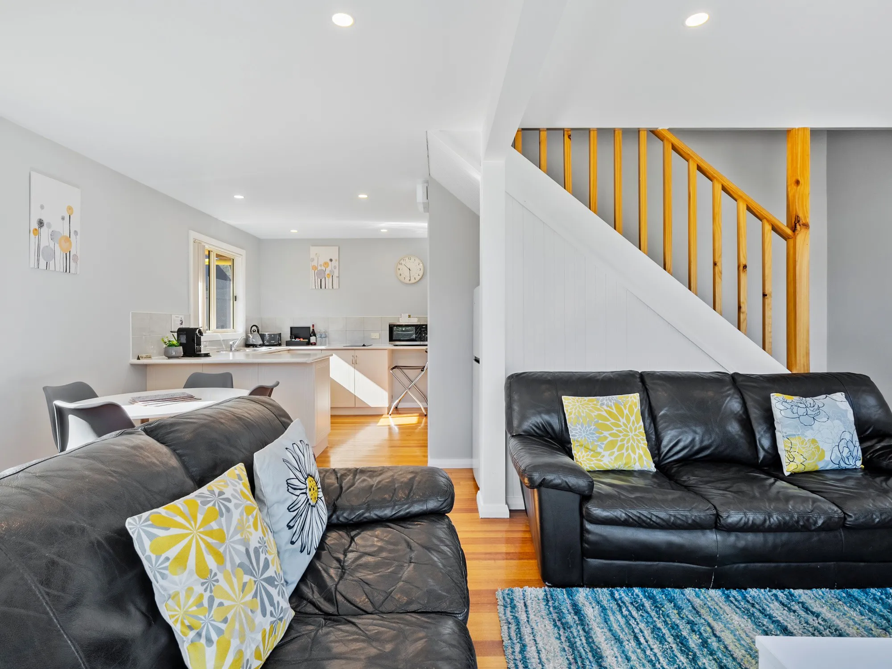

Well furnished, brilliant sunsets and very private.
Only 1 hours' drive from Hobart, the Four Seasons Waterfront Villas is located on the tranquil waters of Norfolk Bay and close by to historic Port Arthur convict site. Staying at our waterfront accommodation means you are close to the popular tourist spots.
Our villas share a secluded block each with its own private space and direct access to the waterfront. With more space than other accommodation in the area, our light filled and tastefully decorated villas are easy to relax into.
There are wallabies, echidnas, Tasmanian devils and a whole host of seabirds in this area including endangered species. It is great for families old and young and wonderful for couples of all ages. One night is never enough, so make it a focus for your Tasmania trip and let these local experiences shape your future memories.

Each villa is its own complete home with kitchen, dining and living spaces. Out your door you have quick access to the waterfront for regular strolls around the foreshore.

Located on the waterfront, our villas give you direct access to Norfolk Bay and the beautiful coastline.

Close to Port Arthur historical convict site and other natural features in the area. Four Seasons Waterfront Villas is close by and the perfect place to stay.
Our villas are your home away from home. Comfortable, private and with everything you need to relax and unwind on your holiday. Your hosts June and Andrew look forward to greeting you and helping make your stay a memorable one.
Book Your StayOur accommodation is clean, well presented and equipped with everything you need to get the most from your holiday on the Tasman Peninsula.
We have 3 separate villas, each one offers a separate kitchen, bathroom and living spaces as well as separate bedrooms. A step out the front door and you are almost on the beach.
Located in the Tasman Peninsula there is so much to see and do. And it's all nearby. Be sure to check out our 'Nearby' link to learn more.
We are situated on Little Norfolk Bay which is part of the larger Norfolk Bay and co-joined to Frederick Henry Bay. These wide open sea water spaces are perfect for fishing or sailing.
Although our natural environment would have been very harsh back in convict times, these days we can enjoy its rugged beauty. Be sure to check out the natural land formations in the area.
We are surrounded by natural beauty. All you have to do is walk out your front door to find yourself in it. Every day is different and brings with it new and different experiences.
Light and spacious with room to stretch out and relax in. You will relax the moment you step into one of our private villas. With all the conveniences that you would expect from a home away from home.






